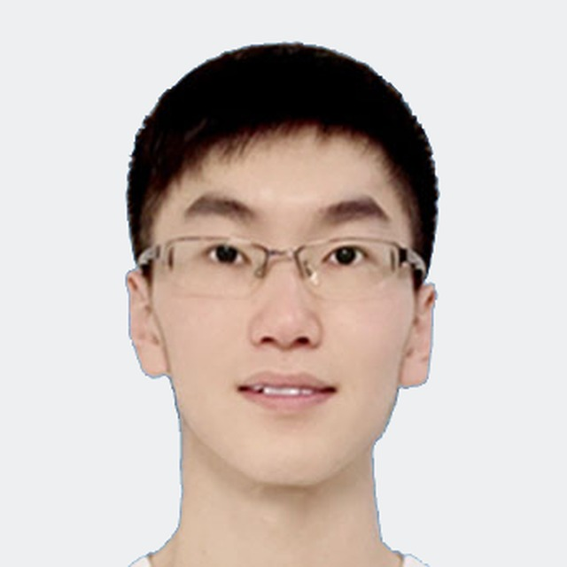

Yujie Yan严宇杰
PhD Candidate, College of Integrated Circuits and Micro-Nano Electronics, Fudan University
Visiting PhD Student, School of Informatics, University of Edinburgh
博士研究生，复旦大学集成电路与微纳电子创新学院
联合培养博士生，英国爱丁堡大学信息学院
I work on compilers and learning-based optimization for chip design — from high-level synthesis to LLM-assisted hardware code generation and verification. 我研究面向芯片设计的编译与学习式优化：从高层次综合，到大模型辅助的硬件代码生成与验证。
🎓 I am on the job market for 2027 (PhD expected June 2027), looking for roles in AI compilers, AI for EDA and hardware–software co-design. 🎓 我预计将于 2027 年 6 月博士毕业，正在寻找 AI 编译器、AI for EDA、软硬件协同方向的工作机会。

University of Edinburgh
Edinburgh EH8 9AB, UK 英国爱丁堡大学
信息学院 Informatics Forum
Edinburgh EH8 9AB
About个人简介
I am a PhD candidate at the College of Integrated Circuits and Micro-Nano Electronics, Fudan University, in the State Key Laboratory of Integrated Chips and Systems, advised by Prof. Keren Zhu. Since April 2026 I have been a visiting PhD student at the School of Informatics, University of Edinburgh, hosted by Dr. Jianyi Cheng and funded by the China Scholarship Council.
我是复旦大学集成电路与微纳电子创新学院的博士研究生，依托集成芯片与系统全国重点实验室，师从 Keren Zhu 教授。2026 年 4 月起，我作为国家公派联合培养博士生在英国爱丁堡大学信息学院访问，导师为 Jianyi Cheng。
My research aims to automate chip design, using neural networks and large language models to assist in designing chips and formally verifying them, so that hardware can be both efficient and correct. My research interests include high-level synthesis, compilers, electronic design automation, machine learning for systems, and formal methods.
我的研究聚焦芯片设计自动化：借助神经网络、大语言模型等技术，辅助完成芯片的设计与形式化验证，让硬件既高效又正确。我的研究兴趣包括高层次综合、编译器、电子设计自动化（EDA）、面向系统的机器学习以及形式化方法。
Alongside research, I have spent about two and a half years in industry: at Shanghai Fudan Microelectronics, working on an HLS tool and its core scheduling algorithm, and in the Advanced Technology Group of UniVista Industrial Software, on LLM-assisted RTL generation and repair, applied in the UniVista Design Assistant (UDA) tool released in February 2025.
在科研之外，我有约两年半的工业界实习经历：在上海复旦微电子参与 HLS 工具软件开发及其核心调度算法研发；在上海合见工业软件先进技术组参与 LLM 辅助 RTL 生成与纠错算法研发，成果应用于 2025 年 2 月发布的 UniVista Design Assistant（UDA）工具。
News近期动态
- 2026.05 Presented LENS-HLS at FCCM 2026 (Atlanta, USA); HOLMES (AMS placement) appeared at ISCAS 2026 (Shanghai). LENS-HLS 在 FCCM 2026（美国亚特兰大）展示；HOLMES（AMS 布局）发表于 ISCAS 2026（上海）。
- 2026.04 Started my visiting PhD at the University of Edinburgh, hosted by Dr. Jianyi Cheng. 赴英国爱丁堡大学开始联合培养，导师为 Jianyi Cheng。
- 2025.12 Presented HOLMES-HLS at ICFPT 2025 (Shanghai). HOLMES-HLS 在 ICFPT 2025（上海）发表。
- 2025.02 UniVista released the UniVista Design Assistant (UDA), which includes the LLM-assisted RTL generation work I contributed to as an algorithm intern. 合见工软正式发布 UniVista Design Assistant（UDA），其中包含我作为算法实习生参与研发的 LLM 辅助 RTL 生成成果。
- 2024.12 Won 2nd place (Stage 2) in the Machine Learning Contest for Chip Design with HLS, hosted by UCLA and AMD; the results were showcased during NeurIPS 2024 (Vancouver, Canada). 获 UCLA × AMD 主办的 Machine Learning Contest for Chip Design with HLS（Stage 2）全球第二名，成果在 NeurIPS 2024（加拿大温哥华）会议期间展出。
Education & Experience教育与工作经历
Education教育背景
- 2026.04 – present至今Visiting PhD Student联合培养博士生School of Informatics, University of Edinburgh · Host: Dr. Jianyi Cheng 英国爱丁堡大学 信息学院 · 导师：Jianyi ChengChina Scholarship Council (CSC) joint-PhD program 国家公派联合培养博士研究生（教育部卓越人才国际化培养项目）
- 2021.09 – 2027.06 (expected)（预计）PhD in Integrated Circuits and Systems Design集成电路与系统设计 博士（推免直博）Fudan University · Advisor: Prof. Keren Zhu复旦大学 · 导师：Keren Zhu 教授State Key Laboratory of Integrated Chips and Systems · direct-entry PhD 集成芯片与系统全国重点实验室
- 2019.07 – 2019.09Summer Programme in AI & Machine Learning人工智能与机器学习 暑期研修University of Manchester, UK英国曼彻斯特大学
- 2017.09 – 2021.06BEng in IC Design and Integrated Systems (Excellent Engineer Program) 集成电路设计与集成系统（卓越计划） 工学学士Huazhong University of Science and Technology华中科技大学GPA 3.94/4.0, ranked 5th in the programme · Outstanding Graduate GPA 3.94/4.0，专业排名第 5 · 校级优秀毕业生
Industry工业界经历
- 2024.07 – 2026.01Algorithm Intern, Advanced Technology Group算法实习生 · 先进技术组UniVista Industrial Software Group, Shanghai上海合见工业软件集团LLM-assisted RTL generation and repair; results applied in the UniVista Design Assistant (UDA), released in Feb 2025. 参与 LLM 辅助 RTL 生成与纠错算法研发，成果应用于 2025 年 2 月发布的 UniVista Design Assistant（UDA）。
- 2023.06 – 2024.06Software Development Intern, Software Department软件开发实习生 · 软件部Shanghai Fudan Microelectronics Group上海复旦微电子集团HLS tool development; contributed to the research and development of its core scheduling algorithm. 参与 HLS 工具软件开发及核心调度算法的研究与开发。
- 2021.07 – 2021.09EDA Software Development InternEDA 软件开发实习生Shanghai Fudan Microelectronics Group上海复旦微电子集团
Research研究方向
Hardware Compilation & HW/SW Co-design硬件编译与软硬件协同
High-level synthesis as a hardware compiler: scheduling, optimization directives and source-level transformations that map software programs efficiently onto hardware.
把高层次综合视作硬件编译器：研究调度、优化指令与源码级变换，让软件程序高效地映射到硬件上。
Learning-based Auto-tuning学习式自动调优
Neural-network cost models, Bayesian optimization and LLM-guided search that find high-quality configurations in huge, expensive-to-evaluate optimization spaces.
结合神经网络代价模型、贝叶斯优化与大模型引导搜索，在规模巨大、评估昂贵的优化空间中自动找到高质量配置。
LLMs for Hardware Code大模型辅助硬件代码
Using large language models to understand, generate and repair hardware code — from RTL generation to correctness-preserving program transformation.
用大语言模型理解、生成和修复硬件代码：从 RTL 生成到保证正确性的程序变换。
Formal Verification & Operator Correctness形式化验证与算子正确性In progress进行中
Using LLMs to help write formal specifications and proofs, so that operators, compiler transformations and generated hardware code can be rigorously checked for correctness.
用大模型辅助编写形式化规约与证明，让算子、编译变换以及生成的硬件代码都能被严格验证其正确性。
Publications论文发表
-
TRETS 2026Beyond Surrogate Accuracy: Credibility-Aware LLM-Guided Design Space Exploration for High-Level SynthesisACM Transactions on Reconfigurable Technology and Systems (TRETS), 2026 · FPT 2026 Journal TrackAccepted已接收
-
FCCM 2026LENS-HLS: LLM-Enhanced Learning-based Design Space Exploration for High-Level SynthesisIEEE 34th International Symposium on Field-Programmable Custom Computing Machines (FCCM), Atlanta, GA, USA, 2026, p. 272
-
ISCAS 2026HOLMES: Hierarchical Optimization with poLygonal ModEling for Large-Scale AMS PlacementIEEE International Symposium on Circuits and Systems (ISCAS), Shanghai, China, 2026, pp. 75–79
-
ICFPT 2025HOLMES-HLS: Holistic Optimization and Learning-based Multi-model Exploration System for High-level SynthesisInternational Conference on Field Programmable Technology (ICFPT), Shanghai, China, 2025, pp. 217–218
Awards & Honours荣誉与奖项
- 2025 China Scholarship Council (CSC) Joint-PhD Scholarship 国家公派联合培养博士研究生（教育部卓越人才国际化培养项目）
- 2024
2nd Place (Stage 2), Machine Learning Contest for Chip Design with HLS
Machine Learning Contest for Chip Design with HLS（Stage 2）全球第二名
Hosted by UCLA and AMD美国加州大学洛杉矶分校（UCLA）与 AMD 主办
- 2024 Outstanding Student, Fudan University (2023–2024) 复旦大学优秀学生（2023–2024 学年）
- 2022–24 Fudan University Academic Scholarship (First Class ×1, Second Class ×2) 复旦大学学业奖学金（一等 1 次、二等 2 次）
- 2021 Outstanding Graduate, Huazhong University of Science and Technology 华中科技大学优秀毕业生
- 2020 National Excellence Award, China Undergraduate IC Innovation and Entrepreneurship Competition 全国大学生集成电路创新创业大赛 全国优秀奖
- 2020
Honorable Mention, Mathematical Contest in Modeling (MCM/ICM)
美国大学生数学建模竞赛 国际二等奖（Honorable Mention）
COMAP
Technical Skills专业技能
- Programming编程语言
- C/C++, Python, Verilog HDL
- Compilers & HPC编译与并行
- LLVM, MLIR, CUDA
- EDA / HLSEDA 工具
- AMD Xilinx Vitis HLS, Vivado
- Machine Learning机器学习
- PyTorch, Transformers, Bayesian optimization, GNNs, LLM fine-tuning and data curation PyTorch、Transformer、贝叶斯优化、图神经网络、大模型微调与语料处理
- Formal Methods形式化方法
- Lean 4, Frama-C